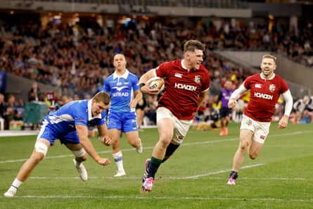
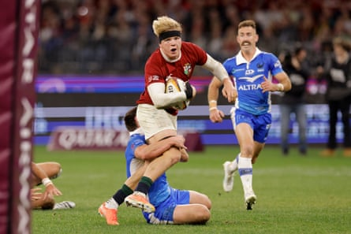

A commanding first tour win for the British & Irish Lions in Australia and plenty for the tour management to ponder. There was much to admire in the way the Lions unzipped a gallant but outgunned Force side on Saturday, not least the playmaking vision of their fly-half, Finn Russell, and the youthful energy of Henry Pollock, but this eight-try triumph did not come entirely cost-free.
The scrum-half Tomos Williams, one of two Welshmen on the tour, contributed a couple of tries but was left clutching his left hamstring after completing a brilliant team score in the right corner. With the Lions facing a hectic series of fixtures in the coming fortnight they may need to whistle up some emergency cover.
For the most part, though, this performance will have also alerted the Wallabies to the Lions’ counterattacking potential and collective depth. Russell looked in good touch, helping to create two of the Lions first three tries and also kicking five conversions in a display that strongly suggested he will be a key figure in the Test series.
There was also no ignoring the contribution of Pollock who was never far from the centre of the action. In many ways he performed just as Andy Farrell would have wished, frequently making a nuisance off himself and bursting away to set up Williams’s first try. While the No 8 was also shown a yellow card just before half-time, his work-rate and energy were also conspicuous.

Tomos Williams limps off the field with a thigh injury after scoring two tries for the Lions.Photograph: Trevor Collens/AP
There were two tries for Elliot Daly, who again looked sharp, while his back-three colleagues, James Lowe and Mack Hansen, were similarly busy. With skipper, Dan Sheehan, lock Joe McCarthy and flanker Josh van der Flier also showing up well, it was not a bad start for the sizeable Irish contingent.
Russell, though, was the game’s pre-eminent architect. A perfect illustration was the Lions’ first try after 90 seconds. With the cover already stretched, a cross-kick by Russell found Sheehan lurking wide on the right. The hooker deftly offloaded to Lowe before scrambling to his feet and making himself available to take the winger’s return pass.
The Force often struggle to live up to their name but, initially at least, they were spirited. Ollie Hospkins and Sam Carter were playing their final games before retirement and had absolutely nothing to lose while Nic White, the moustachioed Wallaby scrum-half, always relishes this kind of challenge. Sure enough it was the former Exeter nine who scored the game’s opening points, sniping over from close range after a 14-phase buildup.
Captain Dan Sheehan cruises over the Western Force tryline to opening the Lions’ account in the first minute.Photograph: Richard Wainwright/AAP
The Lions’ penalty count was also an early issue but they are unquestionably a quick-thinking bunch with ball in hand. Pollock’s instinct for a half-chance is sharp and he showed that knack again by bursting on to a short ball from Van der Flier and surging to within five metres of the Force line. Better still he did not die with the ball, instead popping it up neatly to allow Williams to score.
Defensively, though, the Lions were not always as connected as they might have wanted and the deft combination of Dylan Pietsch and Ben Donaldson caused a few flutters down the left. The high amount of time the ball was in play time was sapping the Force’s energy and Russell was quick to exploit it. He took a quick tap when the home side were expecting him to kick to the posts or the corner and glided his way towards the line before again offloading off the deck to Daly.
Henry Pollock made a good impression in Perth.Photograph: Richard Wainwright/AAP
Pollock, in celebrating the score, attracted the ire of the splendidly named Force flanker Nick Champion de Crespigny, prompting an outbreak of handbags that is also fast becoming a regular feature of games involving the youngster. When the Northampton forward subsequently saw yellow seconds before half-time for not releasing a tackled player it summed up a rollercoaster half of rugby.
The Force announcer had also given the pot a gentle stir, referring to “Our former Aussie Mack Hansen” and “Another former Aussie Sione Tuipulotu” in a not-so-subtle dig at the mixed heritage of several Lions players on the tour. Then again the Australian-born former England hooker Nic Dolly had been due to feature for the Force before withdrawing just before kick-off, so the never-ending nationality debate works both ways.
The rest was relatively routine, with McCarthy, Daly and Mitchell hoisting the Lions past their half-century. From here the Lions are off to Brisbane to face the Reds on Wednesday before heading to Sydney to play the Waratahs three days later. There will be scant opportunity for leisurely reflection but, for the most part, this was an encouraging first hit out on Australian soil.